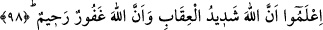
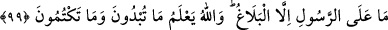

Allah “gerdanlıkları” da insanların belini doğrultmasına vesile kılmıştır.
Kurbanlıkların boynuna takılan nal, boncuk ve ağaç kabuğu gibi işaretler, bu hayvanların
tanınması binek ve yük hayvanı olarak kullanılmaması içindir.
“Gerdanlıklar” kelimesiyle kasdedilen, bu gerdanlıkların boyunlarına asıldığı deve
ve sığırdır. Kurban olabilecek başka hayvanlar da varken özellikle bu iki hayvana işaret
edilmesi, bunlarda sevabın daha çok olması ve haccın güzelliğini daha iyi gösterdikleri
içindir. Buyüzdenledir ki Hz. Ömer (r.a.) “Kim Allah’ın işaretlerine (yani hac
ibadetlerine ve kurbanlara) saygı gösterirse şüphesiz bu, kalplerin takvâsındandır.”
(el-Hac, 22/32) âyetinden dolayı kendisine 300 dinara malolan çok kıymetli bir
hayvanı, kurban olarak kesmiştir.
Gerdanlıkların insanlar için bir ayakta kalma vesilesi olmasına gelince, Kâbe’ye
hediye edilmek üzere ayrılan hayvana gendanlık takılınca kimse dokunmazdı. Araplar,
Mekke’den dönerlerken, binek hayvanlarının boynuna Harem ağaçlarının kabuklarından
takarlar, böylece tehlikeden emin olurlardı. Nitekim Cahiliye devri insanları, aç
kaldıklarında ağaçların dal ve yapraklarını bile yedikleri halde, Kâbe’ye hediye edilen
kurbanlara ve onların gerdanlıklarına hürmet ederek dokunmazlardı.
“İşte bu,” yani bunu meşru kılması “Allah’ın göklerde ve yerde ne varsa hepsini
bildiğini ve Allah’ın her şeyi bilici olduğunu anlamanız içindir.” Nitekim, din ve
dünyâ işlerine zarar verecek şeyleri daha meydana çıkmadan engellemek (def-i
mazarrat) ve uhrevî faydaları temin etmek (celb-i menfaat) için bu prensipleri meşru
kılması Şâri’ Teâlâ’nın hikmetine ve sonsuz ilminin dışına hiçbir şeyin çıkamayacağına
dair açık delillerdendir.
Âyette mânânın pekiştirilmesi için önce tahsis sonra da ta’mîm yapılmıştır. Yani önce
Allah Teâlâ’nın göklerde ve yerde olanları bildiği belirtilmiş, ardından da O’nun
herşeyi bilici olduğu ifade edilmiştir.
98. İyi bilin ki Allah’ın cezâsı çetindir ve yine Allah çok bağışlayan ve
esirgeyendir.
“İyi bilinki Allah’ın cezası çetindir” Bu Allah Teâlâ’nın yasaklarını çiğneyen ve
bunda ısrar edenler için bir tehdiddir.
“Ve Allah çok bağışlayan ve esirgeyendir.” Bu ise, Allah’ın yasaklarına riayete
devam eden veya haram bir iş işlese bile hemen ondan vazgeçenler için bir müjdedir.